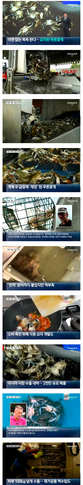

지금 햇꽃게 철이라 존나 맛있던데 100키로면 3키로박스에 30박스 밖에 안되잖아 1톤씩 납품해라
위기를 기회로 만들었다는 말이 멋지다
일단 간장 양조장부터 만들어라
그... 문어는 언제 옵니까?
하루 100kg수출은 진짜 어디 마트에 납품하나 ㅋㅋ
쟤내들 입장에선 큰 걸수도 있음
예전에 일 터졌을땐 그냥 갈아서 버렸대자너
어디서 봤던 패턴인데????
이젠전략을바꿔야합니다
잘 얼려서 보내주세요
하루100kg? 장난쳐? 100T씩 내놔
어허 '청게'
청게 아냐.
저건 꽃게인데 파란색인거고 블루크랩이라 불림.
청색꽃게라 우리나라 꽃게랑도 당연히 다름.
청게는 톱날꽃게라고 영어론 머드 크랩.
우리나라에도 이미 튀니지 푸른꽃게 같은거가 저거랑 같은거라 들어오고 있음.
고작 100kg 넘 적다
작년에 꽃게 금어기풀리고 마트에서 10kg샀는데 하루 100kg은 동네마트물량보다 적겠는걸...
100kg은 ㅋㅋㅋㅋㅋㅋㅋㅋㅋㅋ
더 마이 팔아주이소~♨️
어차피 가격이나 맛 이점 없지않음?
100t 도 아니고 100kg이면 컨테이너 반의 반은 차나..?

냉동꽃게로 만들어서 탕국용으로 유통하면 딱이네
100kg 밖에 수출을 못하니까 그렇게 비싸지 시벌 ㅋㅋ
음식 크게 하는 집이면 한 집에서 쓸 분량밖에 안 되겠네 ㅋㅋㅋ
100키로가 뭐냐 톤단위로 팔아야지
하루 1톤씩 납품해도 순살처럼 녹아 없어질건데
양념게장 하..
맛이 있는 죄 달게 받아라
100kg??
일 안할래?
음..... 그래서 맛있음?
이태리는 어민조합 회장도 멋있네, 가끔 방송에 나오는 대한민국 어민조합 회장은 피부까매서 쪼글한 키작은 할아버지들이던데
니들이 게맛을 아네??